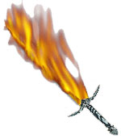
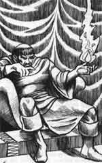
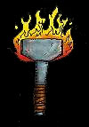
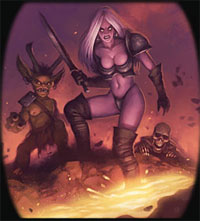
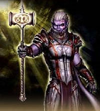

1° LIVELLO DI POTERE
| Battlefate | Charm |
| Sphere : | Charm |
| Range : | 18 metri |
| Components : | V, S, M |
| Duration : | 4 round + 1 round/2 livelli |
| Casting Time : | 4 |
| Area of Effect : | Una creatura |
| Saving Throw : | None |
Quando il chierico lancia invoca il potere delle propria divinità affinché renda la creatura beneficiaria più forte in battaglia. Per tutta la durata dell'incantesimo, che è pari a 4 round + 1 round ogni due livelli di lancio della magia (5 round al 1° e 2° livello, 6 round al 3° e 4° livello, 7 round al 5° e 6° livello, e così via...) fino ad un massimo di 10 round all'11° livello di lancio, chi riceve gli effetti di questa magia dovrà tirare 1d6 nella fase delle intenzioni per determinare il beneficio ricevuto. Il tiro va ripetuto all'inizio di ogni nuovo round di combattimento. Per determinare il beneficio si consulti, dunque, la seguente tabella:
| TIRO | BENEFICIO |
| 1 | Nessun beneficio sarà applicato nel round |
| 2 | Difesa Migliorata, si applichi il bonus alla Classe Armatura |
| 3 | Attacco Migliorato, si applichi il bonus ai Tiri per Colpire |
| 4 | Danno Potenziato, si applichi il bonus ai Danni |
| 5 | Resistenza Maggiorata, si applichi il bonus ai Tiri Salvezza |
| 6 | Il beneficiario può scegliere che beneficio applicare nel round |
Si noti che il bonus previsto per i danni sarà applicato solo ai danni principali prodotti dagli attacchi effettuati dalla creatura non applicandosi, ad esempio, ai danni prodotti da poteri speciali, ai danni supplementari prodotti con arti di combattimento od ai danni prodotti tramite il lancio delle magie. L'ammontare del bonus applicato al beneficiario dipende dal livello di lancio della magia. In particolare sarà applicato un bonus di +1 se la magia è utilizzata dal 1° al 4° livello di lancio ed un bonus di +2 se la magia è utilizzata a partire dal 5° livello di lancio. Il componente materiale di questo incantesimo è una moneta di metallo con inciso il simbolo della divinità dal costo di 3 monete d'oro e dal peso pari ad 1/10 di libbra che si consuma al lancio dell'incantesimo.
| Call Upon Faith | Summoning |
| Sphere : | Summoning |
| Range : | 0 |
| Components : | V, S, M |
| Duration : | Speciale |
| Casting Time : | 1 |
| Area of Effect : | The Caster |
| Saving Throw : | None |
Prima di iniziare una qualsiasi difficile azione il chierico può invocare l'aiuto della propria divinità. In questo modo il chierico otterrà un beneficio corrispondente ad un bonus +3 (+15%) che potrà applicare ad un singolo tiro necessario ad effettuare il compimento dell'azione. Questo beneficio può essere utilizzato solo per il compimento di un'azione che inizi e si concluda nel round immediatamente successivo a quello del lancio della presente magia. Si noti che questo incantesimo non può essere utilizzato nel caso in cui il chierico desideri effettuare un'azione consistente nell'invocare un intervento divino. Il componente materiale di questo incantesimo è il simbolo sacro del chierico.
| Combine | Summoning |
| Sphere : | All |
| Range : | Tocco |
| Components : | V, S |
| Duration : | Speciale |
| Casting Time : | 1 round |
| Area of Effect : | Speciale |
| Saving Throw : | None |
Questo incantesimo cumulativo può essere utilizzato da due a quattro chierici. La magia, per precisione, viene utilizzata sempre sul chierico del livello di esperienza più lato (in caso di chierici di pari livello su uno a loro scelta) da quelli di livello più basso. Costoro lanciano la magia toccando il chierico che deve ottenere gli effetti benefici. Quest'ultimo quindi potrà considerarsi, fino a che perdura questa magia, di un livello di esperienza superiore per ogni chierico che ha utilizzato su di lui questo incantesimo al solo fine di effettuare un'azione di scacciare o controllare i non morti e di determinare il livello di lancio dei propri incantesimi. Si noti che, nonostante il chierico possa lanciare magie ad un livello di lancio superiore, questo incantesimo non permette al chierico di accedere a magie diverse da quelle alle quali aveva regolarmente accesso né di ottenere punti preghiera supplementari. Per funzionare la magia richiede che il chierico beneficiario non si sposti dalla posizione occupata al momento del suo lancio nonché il mantenimento della concentrazione da parte dei chierici che l'hanno lanciata i quali, se attaccati durante il mantenimento della concentrazione, saranno considerati (sempre che non decidano di interromperla) come se fossero storditi [stunned]. Se, per qualsiasi motivo, viene meno la concentrazione del chierico che ha lanciato questo incantesimo od il suo contatto fisico con il beneficiario (ad es. il chierico che ha lanciato la magia si sposta o cade al suolo knockdown) la magia terminerà immediatamente solo in relazione al chierico che ha interrotto la concentrazione. Se, invece, è il chierico che beneficia di questa magia a spostarsi dalla posizione originariamente occupata (od a cadere al suolo knockdown) costui farà venir meno tutte le magie di combine che gli erano state lanciate. Si noti, infine, che se è solo il chierico beneficiario a perdere la concentrazione nel lancio delle sue magie ciò non influenzerà gli incantesimi di combine che gli erano stati lanciati addosso.
| Detect Magic | Divination |
| Sphere : | Divination |
| Range : | 0 |
| Components : | V, S, M |
| Duration : | 1 round |
| Casting Time : | 1 round |
| Area of Effect : | The Caster |
| Saving Throw : | None |
Quando il chierico lancia questo incantesimo riesce a percepire la luminosità delle aure magiche presenti entro 30 metri di distanza dallo stesso. Per poter percepire la luminosità dell'aura, però, il chierico deve poter vedere, anche se parzialmente, l'oggetto o la zona in cui l'aura è in effetto. Un chierico non potrà vedere, ad es. l'aura di un oggetto magico che si trova all'interno di uno zaino o sepolto da macerie. In base all'intensità dell'aura, inoltre, il chierico potrà determinare la potenza dell'incantamento. Se si tratta di effetti magici dovuti ad incantesimi, quindi, il chierico potrà determinare il livello di potere della magia di cui analizza gli effetti. Se, invece, si tratta di oggetti magici costui potrà determinarne la potenza dell'incantamento come indicata nella seguente scala:
|
POTENZA DELL'INCANTAMENTO |
PUNTI ESPERIENZA |
| Least Minor Enchantment | 75 punti esperienza |
| Lesser Minor Enchantment | 100 punti esperienza |
| Minor Enchantment | 150 punti esperienza |
| Superior Minor Enchantment | 250 punti esperienza |
| Greater Minor Enchantment | 375 punti esperienza |
| Lesser Enchantment | 500 punti esperienza |
| Superior Enchantment | 1000 punti esperienza |
| Greater Enchantment | 1500 punti esperienza |
Il componente materiale di questo incantesimo è il simbolo sacro del chierico.
| Endure Cold and Heat | Abjuration |
| Sphere : | Protection |
| Range : | Tocco |
| Components : | V, S, M |
| Duration : | 24 ore |
| Casting Time : | 1 round |
| Area of Effect : | Una creatura |
| Saving Throw : | None |
Questo incantesimo protegge la creatura che lo riceve dal calore e dal freddo. In particolare, per un'intera giornata, chi riceve questo incantesimo non patirà gli effetti di temperature molto basse o molto alte resistendo da -20° a 50° centigradi anche indossando dei comuni vestiti. Qualora il personaggio si trovi esposto a temperature che superano le soglie di resistenza la magia terminerà immediatamente. Qualora, inoltre, il personaggio subisce una qualsiasi forma di danno (sia di origine magica che naturale) da freddo, fuoco o calore la magia terminerà immediatamente ma il primo danno di questo tipo subito sarà ridotto di 2 punti danno + 1 punto danno per livello di lancio della magia (fino ad un massimo di 10 punti danno all'8° livello di esperienza). Questa magia, infine, terminerà immediatamente qualora chi l'ha ricevuta si sottopone agli effetti di una qualsiasi altra protezione magica al freddo, al fuoco od al calore. Il componente materiale di questo incantesimo è il simbolo sacro del chierico.
| Magical Stone | Enchatment |
| Sphere : | Combat |
| Range : | Tocco |
| Components : | V, S, M |
| Duration : | Speciale |
| Casting Time : | 4 |
| Area of Effect : | da 1 a 3 ciottoli |
| Saving Throw : | None |
Utilizzando questo incantesimo il chierico può incantare fino a tre ciottoli non più grandi di quelli utilizzabili come proiettili comuni di una fionda. Una volta incantati i ciottoli potranno essere scagliati a mano fino a 30 metri di distanza. I ciottoli potranno essere scagliati anche tutti nel medesimo round (il primo ad un fattore iniziativa pari a +3, gli altri a fine round come attacchi multipli non simultanei). Per colpire il bersaglio sarà necessario effettuare un normale tiro per colpire (modificato dalla destrezza) anche se l'incantamento divino presente sui ciottoli farà automaticamente considerare abile nel loro uso chi si appresta a lanciarli. I ciottoli, inoltre, saranno considerati come armi magiche con incantamento +1 al solo fine di determinare se siano in grado di danneggiare creature immuni alle armi normali. Ogni ciottolo che va a segno provocherà 1d4 danni da impatto, 2d4 danni da impatto contro i non morti e le creature demoniache. Una volta lanciati i ciottoli si sgretoleranno in polvere definitivamente. I ciottoli possono anche essere lanciati come proiettili di una fionda ma in tal caso saranno utilizzate le normali regole di attacco (tranne che per l'incantamento e per i danni subiti dal bersaglio una volta colpito). Se i ciottoli non sono utilizzati immediatamente la magia perdurerà sugli stessi per 30 round al termine dei quali i ciottoli si sgretoleranno comunque in polvere come se fossero stati lanciati. Il componente materiale di questo incantesimo è il simbolo sacro del chierico e fino a tre ciottoli di fiume dalla forma assai levigata dal valore di 1 monete d'oro (per tutti e tre i ciottoli) e dal peso di 1/2 libbra l'uno.
| Torch of Everburning | Enchatment |
| Sphere : | Elemental Fire |
| Range : | Tocco |
| Components : | V, S |
| Duration : | Speciale |
| Casting Time : | 1 turn |
| Area of Effect : | Una torcia |
| Saving Throw : | None |
Utilizzando questo incantesimo il chierico può incantare una comune torcia permettendole di bruciare potenzialmente a tempo indeterminato. Dopo il lancio dell'incantesimo, infatti, la torcia si prenderà fuoco e continuerà a bruciare senza, però, mai consumarsi. La magia può, ovviamente, essere dissolta magicamente. Inoltre, la torcia si spegnerà e la magia, conseguentemente terminerà, qualora la stessa sia immersa nell'acqua od altro liquido similare oppure sia completamente bagnata in altro modo. La torcia, infatti, continuerà a bruciare anche qualora la stessa cada al suolo o qualora sia presente vento molto forte. Ovviamente, in tali circostanze la luce irradiata dalla torcia sarà ridotta espandendosi per soli 3 metri. Il chierico può utilizzare questo incantesimo su più torce ma lo stesso non potrà mantenerlo attivo su un ammontare di torce superiore ad una torcia ogni due livelli di esperienza raggiunti (arrotondati per eccesso: 1 torcia al 1° e 2° livello, 2 torce al 3° e 4° livello, e così via...). In ogni momento, però, il chierico potrà far terminare la magia (con un'azione complessa che si considera assimilabile al lancio di un incantesimo, che richiede un intero round ed il mantenimento della concentrazione) su una qualsiasi delle torce che ha precedentemente incantato (indipendentemente dalla distanza e dalla locazione ove tale torcia si trova). Quando la magia, per qualsiasi motivo, termina la torcia si sgretolerà immediatamente in cenere.
2° LIVELLO DI POTERE
| Aid | Summoning |
| Sphere : | Combat |
| Range : | Tocco |
| Components : | V, S, M |
| Duration : | 1 round + 1 round/livello |
| Casting Time : | 5 |
| Area of Effect : | Una Creatura |
| Saving Throw : | None |
Chi riceve questo incantesimo viene benedetto ed aiutato dalla divinità ottenendo per tutta la sua durata un bonus di +1 al tiro per colpire e di +1 a tutti i tiri salvezza. Si noti che questi bonus, come del resto ogni altro bonus di origine divina, non si cumulano con bonus, sempre di origine divina, che incidano sul medesimo tiro od effetto (si pensi ad es. al bonus al tiro per colpire od ai tiri salvezza contro paura donato dall'incantesimo di primo livello di potere Bless o da quelli similari donati dalle magie Chant e Prayer). Oltre a tali bonus il soggetto che riceve questo incantesimo vedrà aumentati temporaneamente i propri punti ferita di 1d8. Tali punti ferita supplementari non possono essere recuperati in alcun modo (ad es. tramite cure magiche) e saranno i primi ad essere eliminati in caso di danni (la creatura protetta quindi perderà questi punti supplementari prima di perdere i propri punti ferita) ed in ogni caso questi svaniranno al termine della durata dell'incantesimo. Il componente materiale di questo incantesimo è il simbolo sacro del chierico ed una striscia di veste bianca cosparsa di resina dal valore di 2 monete d'oro e dal peso di 0.2 libbre che si consuma al momento del lancio dell'incantesimo.
| Fire Weapon | Evocation |
| Sphere : | Combat |
| Range : | Tocco |
| Components : | V, S, M |
| Duration : | 3 round + 1 round ogni 2 livelli |
| Casting Time : | 1 round |
| Area of Effect : | Un'arma |
| Saving Throw : | None |
|
 |
Attraverso questa magia il chierico incanta la propria arma infondendo nella
stessa energia del piano elementale del fuoco. In particolare, l'arma
otterrà i seguenti benefici: l'arma sarà circondata da fiamme vorticose. Quando il chierico
che utilizza l'arma va a segno contro un bersaglio lo stesso subirà, oltre ai
comuni danni dell'arma, 1d6+2 danni supplementari da fuoco di natura magica. |
| Heat Metal |
Alteration |
| Sphere : |
Elemental Fire |
| Range : |
30 metri |
| Components : |
V, S |
| Duration : |
7 round |
| Casting Time : |
5 |
| Area of Effect : |
Un oggetto di metallo |
| Saving Throw : |
Speciale |
Attraverso questa magia il chierico può far divenire
un qualsiasi metallo estremamente caldo. Le Elven Chain Mail sono immuni a
questo incantesimo mentre gli oggetti magici ottengono una speciale resistenza
alla magia nei confronti di questo incantesimo che è pari al 10% ogni 500 xp (o
frazione) di incantamento totale posseduto. Se, inoltre, l'oggetto è trasportato
da una creatura la stessa ha anche diritto a superare un tiro salvezza su magia per evitare gli effetti della magia. Se la magia ha effetto,
l'oggetto prescelto dal chierico inizierà a riscaldarsi raggiungendo sempre
maggiori temperature. In particolare, saranno raggiunte tre diverse fasi di
riscaldamento ognuna comportante diversi effetti:
1) Oggetto caldo: Questa fase inizia al momento del lancio della magia e
prosegue fino alla fine del round immediatamente successivo (1° e 2° round di
durata della magia). In questa fase l'oggetto inizia ad emanare un intenso
calore chiaramente crescente e percepibile da chi lo trasporta. In questa fase,
però, maneggiare od indossare l'oggetto non provoca alcuna particolare
controindicazione.
2) Oggetto scottante: Questa fase si verifica nel 3° e nel 4° round di durata
della magia. L'oggetto ormai è divenuto scottante. Se l'oggetto era impugnato o
vuole essere impugnato da una creatura in questa fase la stessa deve effettuare
all'inizio di ogni round un tiro salvezza su robustezza. Se il tiro
salvezza fallisce la creatura non riuscirà a mantenere l'oggetto a causa del
dolore subito che, quindi, gli cadrà da mano. Le creature che posseggono la
competenza Pain Tollerance e che riescono in una prova nella stessa ricevono un
bonus di +20% al tiro salvezza (la prova come del resto il tiro salvezza va
ripetuto ogni round). Le creature immuni al dolore (si pensi ad esempio ai non
morti ed ai costruiti) possono mantenere l'oggetto senza alcuna prova. Se
l'oggetto è, invece, indossato dalla creatura la stessa dovrà superare il
suddetto tiro salvezza (con i modificatori e le immunità su menzionate) per non
risultare incapacitata dal dolore subito (anche questo tiro salvezza deve essere
ripetuto ogni round e la vittima sarà incapacitata solo nei round nei quali il
tiro salvezza fallisce). In ogni caso, nel corso di questa fase, l'intenso
calore provoca alla fine di ogni round di durata della magia 1d4+1 danni da
calore alla creatura che impugna od indossa l'oggetto.
3) Oggetto rovente: Questa fase si verifica nel 5°, nel 6° e nel 7° round di
durata della magia. L'oggetto ormai è divenuto rovente. Se l'oggetto era
impugnato o vuole essere impugnato da una creatura in questa fase la stessa deve
effettuare all'inizio di ogni round un tiro salvezza su robustezza
con penalità di -10%. Se il tiro salvezza fallisce la creatura non riuscirà a
mantenere l'oggetto a causa del dolore subito che, quindi, gli cadrà da mano. Le
creature che posseggono la competenza Pain Tollerance e che riescono in una
prova nella stessa ricevono un bonus di +10% al tiro salvezza (la prova come del
resto il tiro salvezza va ripetuto ogni round). Le creature immuni al dolore (si
pensi ad esempio ai non morti ed ai costruiti) possono mantenere l'oggetto senza
alcuna prova. Se l'oggetto è, invece, indossato dalla creatura la stessa dovrà
superare il suddetto tiro salvezza (con i modificatori e le immunità su
menzionate) per non risultare impedita dal dolore subito (anche questo tiro
salvezza deve essere ripetuto ogni round e la vittima sarà impedita solo nei
round nei quali il tiro salvezza fallisce). In ogni caso, nel corso di questa
fase, l'intenso calore provoca alla fine di ogni round di durata della magia
1d6+2 danni da calore alla creatura che impugna od indossa l'oggetto.
Nel round immediatamente successivo alla fine dell'incantesimo l'oggetto
risulterà unicamente caldo (come se fosse nella prima fase di riscaldamento).
Pioggia, neve, od effetti atmosferici assimilabili conferiscono un bonus di +5% a
tutti i tiri salvezza effettuati contro questo incantesimo. Qualora, nel corso
della durata della magia, l'oggetto viene immerso totalmente nell'acqua od in
altro liquido non infiammabile la magia terminerà immediatamente.
| Produce Flame | Evocation Fire |
| Sphere : | Combat |
| Range : | 0 |
| Components : | V, S |
| Duration : | 1 round / livello |
| Casting Time : | 1 round |
| Area of Effect : | The Caster |
| Saving Throw : | None |
|
 |
Al termine del round di lancio di questa magia apparirà sul palmo della mano principale del chierico una fiamma ardente. La fiamma non brucia la mano del chierico ma il chierico può utilizzarla per dare fuoco ad oggetti infiammabili. La fiamma, inoltre, può essere utilizzata per combattere. Il chierico, infatti, può scagliare la fiamma sui nemici che si trovino fino ad una distanza di 15 metri. Scagliare la fiamma si considera un'azione complessa di attacco che non affatica il chierico e non richiede il mantenimento della concentrazione. Tale attacco avviene ad un fattore iniziativa pari a +4. Il chierico dovrà effettuare un regolare tiro per colpire contro la creatura che desidera attaccare. Se il tiro per colpire riesce la vittima subirà 1d6+2 danni da fuoco magico. Dopo che è stata scagliata, all'inizio di ogni nuovo round di durata della magia, sulla mano del chierico si formerà una nuova fiamma che il chierico potrà nuovamente lanciare. La magia terminerà immediatamente, però, se il chierico utilizza la mano in qualsiasi altro modo (ad esempio per lanciare un incantesimo, raccogliere o impugnare un oggetto) ed ovviamente potrà essere normalmente dissolta utilizzando la magia. |
| Resist Acid & Corrosion | Abjuration |
| Sphere : | Protection |
| Range : | Tocco |
| Components : | V, S, M |
| Duration : | 1 round per livello |
| Casting Time : | 5 |
| Area of Effect : | Una creatura |
| Saving Throw : | None |
Questo incantesimo protegge la creatura che lo riceve dall'acido, dalle sostanze caustiche e da ogni altra sostanza corrosiva. Per tutta la durata dell'incantesimo la creatura protetta subirà solo la metà (calcolata per difetto) di tutti i danni da acido subiti. Inoltre, qualora la stessa debba superare un qualsiasi tiro salvezza per ridurre il danno subito dall'acido costei riceverà un bonus di +2 al tiro. Il componente materiale di questo incantesimo è il simbolo sacro del chierico ed una dose di olio d'oliva che si consuma al momento del lancio. Un dispensatore d'olio con 10 dosi ha un valore di 3 monete d'oro ed un peso pari ad 1 libbra.
| Resist Cold | Abjuration |
| Sphere : | Protection |
| Range : | Tocco |
| Components : | V, S, M |
| Duration : | 1 round per livello |
| Casting Time : | 5 |
| Area of Effect : | Una creatura |
| Saving Throw : | None |
Questo incantesimo protegge la creatura che lo riceve dal freddo sia di origine magica che naturale. Per tutta la durata dell'incantesimo la creatura protetta subirà solo la metà (calcolata per difetto) di tutti i danni da freddo. Inoltre, qualora la stessa debba superare un qualsiasi tiro salvezza per ridurre il danno subito dal freddo costei riceverà un bonus di +2 al tiro. Il componente materiale di questo incantesimo è il simbolo sacro del chierico ed un piccolo pezzo di carbone dal peso di 0.2 libbre e dal costo di 0.1 monete d'oro che si consuma al lancio dell'incantesimo.
| Resist Fire | Abjuration |
| Sphere : | Protection |
| Range : | Tocco |
| Components : | V, S, M |
| Duration : | 1 round per livello |
| Casting Time : | 5 |
| Area of Effect : | Una creatura |
| Saving Throw : | None |
Questo incantesimo protegge la creatura che lo riceve dal fuoco e dal calore sia di origine magica che naturale. Per tutta la durata dell'incantesimo la creatura protetta subirà solo la metà (calcolata per difetto) di tutti i danni da fuoco o calore. Inoltre, qualora la stessa deve superare un qualsiasi tiro salvezza per ridurre il danno subito dal fuoco o dal calore costei riceverà un bonus di +2 al tiro. Il componente materiale di questo incantesimo è il simbolo sacro del chierico ed una dose di mercurio che si consuma al momento del lancio Un dispensatore di mercurio con 10 dosi ha un valore di 50 monete d'oro ed un peso pari a 1/2 libbra.
| Sanctify | Summoning |
| Sphere : | All |
| Range : | Tocco |
| Components : | V, S, M |
| Duration : | 24 ore |
| Casting Time : | 1 turno |
| Area of Effect : | Speciale |
| Saving Throw : | None |
Questo incantesimo permette al chierico di creare una zona sacra. In particolare l'area d'effetto di questa magia può essere la superficie di un edificio o di un qualsiasi terreno che abbia un'area non superiore a 20 metri quadrati per livello di lancio della magia. Dopo il lancio di questo incantesimo l'area viene pervasa dal potere divino. Per tale motivo, tutti coloro sono fedeli della medesima divinità ottengono un bonus di +2 a tutti i tiri salvezza finché restano all'interno dell'area santificata, tutti coloro sono fedeli di una divinità dello stesso gruppo, ad es. Fratellanza della Luce, riceveranno un bonus di +1 ai tiri salvezza, stesso bonus sarà ricevuto da chi non è fedele di alcuna divinità ma possiede il medesimo allineamento della divinità del chierico che ha lanciato la magia. Creature non fedeli a nessuna divinità con allineamento diverso ed, in ogni caso, fedeli di divinità appartenenti ad un diverso gruppo non riceveranno alcun beneficio. Tutte le creature (indipendentemente dalla loro fede) che si trovano nella zona consacrata e sono intenzionate ad attaccare, od in qualsiasi modo danneggiare, il chierico, i suoi fedeli, ed in generale il culto della divinità che ha consacrato il suolo riceveranno una penalità di -1 a tutti i tiri salvezza fino a che resteranno nell'area consacrata. Oltre a tale beneficio, qualsiasi tentativo di scacciare i non morti presenti all'interno dell'area otterrà un bonus di +2 al potenziale di scaccio, ciò indipendentemente dalla divinità adorata dal chierico che esegue lo scaccio. Il componente materiale di questo incantesimo è il simbolo sacro del chierico e rari incensi per un valore pari a 3 g.p. ogni 20 metri quadrati consacrati che si consumano al lancio della magia.
3° LIVELLO DI POTERE
| Dispel Magic | Abjuration |
| Sphere : | All |
| Range : | 60 metri |
| Components : | V, S |
| Duration : | Istantanea |
| Casting Time : | 6 |
| Area of Effect : | Sfera di 3 metri di diametro |
| Saving Throw : | None |
Quando il chierico lancia questa magia ha una certa possibilità di dissipare
l'energia magica presente nell'area d'effetto. In particolare, all'uso di questa
magia, potranno verificarsi una serie di effetti (si noti che la magia proverà
automaticamente a dissipare tutta la magia presente nell'area senza che il
chierico possa operare alcuna forma di selezione o distinzione).
In primo luogo il chierico ha una certa possibilità di dissolvere effetti magici
presenti nell'area d'effetto, nonché quelli attivi sulle creature o sugli
oggetti presenti nella medesima area. Tali effetti magici possono essere
scaturiti dal lancio di incantesimi, dall'uso di poteri magici innati oppure
dall'utilizzo di oggetti magici. Orbene, per determinare se il chierico è
riuscito a dissipare questa forma di magia presente nell'area lo stesso dovrà
effettuare un tiro con 1d20 (si noti che se il chierico vuole dissipare effetti
magici di incantesimi lanciati da se stesso questo tiro si considererà
automaticamente avvenuto con successo senza che lo stesso debba effettuarlo, ciò
non vale però per effetti magici che il chierico ha attivato in altro modo come
ad esempio attraverso l'uso di oggetti magici). La possibilità base di dissipare
la magia sarà pari ad un tiro di 11 o più (corrispondente quindi al 50% di
possibilità).Occorrerà, quindi, confrontare il livello di lancio di questa magia
con quello dell'effetto magico presente nell'area. Per ogni livello di
differenza il chierico riceverà un bonus/malus di +1 al tiro. Se ad esempio un
chierico lancia una magia di dispel magic al 5° livello di lancio in un'area
dove è presente una creatura che è sotto l'effetto di una magia di invisibilità
lanciata al 3° livello il chierico usufruirà di un bonus di +2, dissipando,
quindi, l'invisibilità con un tiro pari a 9 o più. Si tenga presente che un tiro
pari a 20 si considera in ogni caso successo automatico laddove un tiro pari ad
1 sarà comunque un insuccesso. Se il tiro ha successo l'effetto magico sarà
stato definitivamente dissipato. Si noti che il livello di lancio degli effetti
magici varia a seconda della fonte di tale effetto e può essere determinato
consultando la seguente tabella:
| FONTE DELL'EFFETTO MAGICO | LIVELLO DI LANCIO |
| Incantesimo di mago o chierico | Livello di lancio della magia |
| Potere magico innato | Livello specificato oppure dadi vita della creatura |
| Minor Enchantment | 5° livello di lancio |
| Bacchetta Magica | 6° livello di lancio |
| Staffa | 8° livello di lancio |
| Pozione | 12° livello di lancio |
| Altri oggetti magici | 12° livello di lancio |
| Artefatti | Normalmente resistono alla magia dispel magic |
In secondo luogo questo incantesimo può dissipare la magia con la quale sono stati incantati gli oggetti magici presenti nell'area d'effetto (ciò, quindi, indipendentemente dall'uso che ne era stato fatto). Per ogni oggetto magico presente occorrerà effettuare un tiro con 1d20. La possibilità base di dissipare la magia sarà sempre pari ad un tiro di 11 o più (corrispondente quindi al 50% di possibilità).Occorrerà, quindi, confrontare il livello di lancio di questa magia con il livello corrispondente all'incantamento che è stato infuso nell'oggetto magico. Per ogni livello di differenza, quindi, il chierico riceverà un bonus/malus di +1 al tiro. Se, quindi, il tiro ha successo l'oggetto magico sarà disattivato 1d3+1 rounds (nei quali va calcolato il round in cui si è verificato il dispel magic) ed i suoi poteri non potranno essere utilizzati. Per fare alcuni esempi una pergamena magica letta non sortirà alcun effetto (né potranno consumarsi le magie presenti o verificarne la corretta scrittura) ed un'arma magica +2 si considererà per tale periodo una comune arma non dando più benefici e non permettendo di colpire le creature immuni alle armi normali. Si tenga presente che un tiro pari a 20 si considera in ogni caso successo automatico laddove un tiro pari ad 1 sarà comunque un insuccesso. Infine occorre notare che a differenza di ogni altro oggetto magico qualora l'incantamento di un liquido magico (come una pozione) sia dissolto con successo questi perderà definitivamente ed irrimediabilmente ogni potere magico. Per determinare il livello di lancio corrispondente agli incantamenti presenti sui vari oggetti si consulti la seguente tabella:
|
POTENZA DELL'INCANTAMENTO |
PUNTI ESPERIENZA |
LIVELLO CORRISPONDENTE |
| Least Minor Enchantment | 75 punti esperienza | 5° livello di lancio |
| Lesser Minor Enchantment | 100 punti esperienza | 6° livello di lancio |
| Minor Enchantment | 150 punti esperienza | 7° livello di lancio |
| Superior Minor Enchantment | 250 punti esperienza | 8° livello di lancio |
| Greater Minor Enchantment | 375 punti esperienza | 9° livello di lancio |
| Lesser Enchantment | 500 punti esperienza | 11° livello di lancio |
| Superior Enchantment | 1000 punti esperienza | 13° livello di lancio |
| Greater Enchantment | 1500 punti esperienza | 15° livello di lancio |
| Oggetti di potenza superiore | per ogni 500 punti esperienza | +1 livello di lancio oltre al 15° |
| Pozioni Magiche | Irrilevante | 12° livello di lancio |
| Pergamene Magiche | Irrilevante | 10° livello di lancio |
| Artefatti | Irrilevante | Impossibile dissolverne il potere |
Infine occorre osservare che questa magia ha effetto solo sugli effetti magici
già presenti nell'area d'effetto al momento del lancio non influenzando quindi
l'utilizzo di oggetti magici ed il lancio di incantesimo che avvengono nel
medesimo round di combattimento ma ad un fattore di iniziativa successivo a
quello del dispel magic.
| Glyph of Warding | Abjuration |
| Sphere : | Guardian |
| Range : | Tocco |
| Components : | V, S, M |
| Duration : | Speciale |
| Casting Time : | 1 turn |
| Area of Effect : | Speciale |
| Saving Throw : | Speciale |
|
Attraverso l'uso
di questo incantesimo il chierico crea un glifo protettivo su una
qualsiasi porta, portale, cancello od altro ingresso il cui passaggio
sia possibile chiudere e che ha come dimensioni massime 3 metri di
diametro. Quando il chierico lancia questo incantesimo tocca
contemporaneamente la porta (che deve essere necessariamente chiusa) che
vuole proteggere e pronuncia la parola magica di disattivazione. Al
termine del lancio dell'incantesimo apparirà un glifo su entrambi i lati
della porta od in prossimità di essa. Da quel momento in poi, l'apertura
della porta potrà far attivare il glifo di guardia a meno che la
creatura non pronunci durante l'apertura la parola magica di
disattivazione (in questo caso il glifo si riattiverà automaticamente
non appena la porta sarà stata chiusa nuovamente). Al momento del lancio
il chierico può determinare se il glifo potrà essere aperto in sicurezza
solo attraverso l'uso della parola magica oppure se qualsiasi creatura
possa considerarsi fedele della sua divinità possa aprire la porta senza
attivare il glifo (in questo caso la parola di disattivazione sarà
utilizzata solo da chi non è fedele della divinità). Non appena una
creatura apre la porta innescando il glifo lo stesso si attiverà
producendo sulla creatura i suoi effetti magici. Qualora non attivato il
glifo svanirà al successivo momento di flusso divino della divinità, a
meno che il glifo non sia creato utilizzando, oltre al suo comune
componente materiale, polvere di gemme per un ammontare pari a 250
monete d'oro e dal peso pari ad 1/10 di libbra che si consuma al momento
del lancio. In quest'ultimo caso il glifo resterà permanentemente in
vigore fino alla sua attivazione (o fino a che non sarà dissolto
magicamente). In ogni caso, ogni chierico non può mantenere attivi (sia
permanenti che temporanei) un numero di glifi superiore alla metà, per
eccesso, del suo livello di esperienza. Sia esso temporaneo o
permanente, una volta attivato il glifo svanisce definitivamente. Si
noti, infine, che una volta creato un glifo di guardia non potrà
posizionarsene uno nuovo ad una distanza inferiore a 30 metri dal
precedente (ogni tentativo di lancio fallirà miseramente). |
|
|
 |
Glyph
of Warding - Bazaràk |
| Meld into Stone | Abjuration |
| Sphere : | Elemental Earth |
| Range : | Tocco |
| Components : | V, S, M |
| Duration : | 5 rounds + 1d10 rounds |
| Casting Time : | 6 |
| Area of Effect : | Speciale |
| Saving Throw : | None |
Attraverso l'uso di questa magia il chierico letteralmente si fonde inserendosi, con tutti gli oggetti dallo stesso trasportati, all'interno di un muro di roccia od um altro blocco di pietra. La magia può essere lanciata su un qualsiasi blocco di pietra sia alto, largo e profondo almeno 2 metri. Il blocco di pietra, inoltre deve essere appoggiato al suolo e sporgere dallo stesso. Per tale motivo la magia può essere utilizzata su un muro di roccia o su un macigno ma non su un pavimento od un soffitto anche qualora gli stessi siano di roccia. La magia non funzionerà qualora il chierico trasporti più di 100 libbre di oggetti inanimati od oggetti la cui lunghezza superi due metri. Quando il chierico entra nella roccia lo stesso occupa la posizione più superficiale della stessa rispetto alla zona in cui è entrato, restando in contatto con la superficie esterna della pietra in cui si è inserito. Una volta nella pietra il chierico non potrà spostarsi, parlare, né effettuare alcuna altra azione fisica. Non avrà necessità di respirare e non vedrà nulla né sentirà ciò che accade fuori dalla roccia. Sarà, però, cosciente e consapevole della sua posizione e del trascorrere del tempo. Alla fine di ogni round di durata della magia il chierico potrà decidere di uscire dalla roccia occupando (alla fine del round in cui ha effettuato la scelta) la medesima posizione dallo stesso occupata prima di entrare nella roccia. Qualora tale posizione risulti occupata il chierico si troverà nella più vicina casella libera eventualmente selezionata a caso fra quelle equidistanti. Se allo scadere della durata della magia (il cui tiro deve essere effettuato segretamente) il chierico non è ancora uscito dalla roccia costui verrà espulso violentemente dalla stessa (occupando una posizione come in caso di uscita volontaria) subendo 3d6 danni da schiacciamento (botta). Si consideri che la superficie di roccia in cui il chierico si è inserito abbia una classe armatura pari a 2 ed 80 punti struttura. Attacchi minori alla roccia in cui il chierico si è inserito, che siano cioè solo in grado di scalfirla o graffiarla non produrranno alcun effetto sul chierico. Attacchi in grado di effettuare danni strutturali, invece, qualora riducano i punti struttura della roccia a zero avranno la conseguenza di espellere il chierico dalla stessa. In tal caso il chierico deve superare un tiro salvezza contro raggio della morte. Se il tiro salvezza fallisce il chierico sarà morto a causa dello schiacciamento, altrimenti lo stesso subirà 4d8 danni da schiacciamento (botta). Si noti che il chierico è consapevole dello stato in cui si trova la roccia in cui si è inserito. Alcuni incantesimi hanno effetti particolari sul chierico se lanciati sulla roccia in cui lo stesso si è inserito: una magia Transmute Rock to Mud espellerà il chierico alla fine del round in corso e lo stesso dovrà superare un tiro salvezza contro incantesimi per non morire; una magia Stone to Flash lo espellerà alla fine del round in corso provocandogli 4d8 danni da schiacciamento (botta), una magia Passwall lo espellerà alla fine del round in corso senza che lo stesso subisca alcun danno. Il componente materiale di questo incantesimo è il simbolo sacro del chierico.
| Protection from Fire | Abjuration |
| Sphere : | Elemental Fire |
| Range : | Tocco |
| Components : | V, S, M |
| Duration : | Speciale |
| Casting Time : | 1 round |
| Area of Effect : | Una creatura |
| Saving Throw : | None |
Quando questo incantesimo è lanciato su una creatura la stessa riceve una particolare protezione dai danni da fuoco sia di natura comune che magici. In particolare, la magia assorbirà un ammontare di danni da fuoco pari a 25 danni + 5 danni per livello di lancio della magia oltre il 7° livello, fino ad un massimo di 50 danni da fuoco a partire dal 12° livello di lancio. Questi danni saranno scalati a monte di eventuali riduzioni (senza quindi la loro applicazione) dovute ad altri incantesimi od abilità (si pensi alla magia di Resist Fire). Terminati questi danni l'ammontare residuo sarà inflitto alla creatura e la magia terminerà immediatamente. In ogni caso la magia terminerà una volta raggiunto il successivo flusso di energia divina della divinità. Il componente materiale di questo incantesimo è, oltre al simbolo sacro del chierico, una gemma del tipo granato rosso dal valore minimo di 25 monete d'oro e dal peso di 0,1 libbra che si consuma al lancio della magia.
4° LIVELLO DI POTERE
| Dimensional Anchor | Alteration |
| Sphere : | Guardian |
| Range : | 3 metro per livello |
| Components : | V, S |
| Duration : | 1 turno + 1 round per livello |
| Casting Time : | 1 |
| Area of Effect : | Una creatura |
| Saving Throw : | Negates |
Quando il chierico lancia questo incantesimo su una creatura la stessa ha diritto a superare un tiro salvezza su magia per evitarne gli effetti. Se il tiro è fallito, due sottili catene spirituali di colore bianco si attorciglieranno al corpo della vittima la quale sarà letteralmente ancorata al piano dimensionale in cui si trova per tutta la durata dell'incantesimo. Per tale motivo, qualsiasi forma di movimento dimensionale di qualsiasi fonte esso sia sarà impedito alla creatura. Per fare un elenco esemplificativo degli effetti magici bloccati da questo incantesimo possono indicarsi le seguenti magie: Teleport, Blink, Dimensional Door, Dimensional Folder, Gate, Phasing, Etherealness, Plane Shift, Maze e Shadow Walk. Si noti che la magia non ha alcun altro effetto se non quello di bloccare gli spostamenti extradimensionali della vittima.
| Ground of Fire | Conjuration |
| Sphere : | Elemental Fire |
| Range : | 21 metri |
| Components : | V, S, M |
| Duration : | 1 round / livello |
| Casting Time : | 7 |
| Area of Effect : | Speciale |
| Saving Throw : | None |
|
 |
Attraverso l'uso di questo incantesimo il chierico ricopre la superficie del terreno di fiamme e carboni ardenti. In particolare, il chierico potrà ricoprire di fiamme e materiale incandescente un numero di sezioni circolari (esagoni) di 3 metri di diametro corrispondenti a 2 + 1 sezione supplementare ogni 3 livelli di lancio della magia (4 dal 6° all'8° livello di lancio, 5 dal 9° all'11° livello di lancio, e così via...). Il chierico può disporre queste aree a piacimento purché siano disposte senza soluzione di continuità tra di loro e siano tutte posizionate su superfici e terreni solidi entro il raggio della magia. Orbene, nonostante il materiale infuocato non impedisca il movimento od il passaggio delle creature, tutti gli esseri che alla fine di un qualsiasi round di durata della magia si trovano all'interno di una posizione dal terreno incandescente subiranno 1d4+2 danni da fuoco e calore comune. Le creature che levitano o volano non subiscono alcun danno da questa magia fino a che non atterrano al suolo, parimenti le creature incorporee possono restare all'interno dell'area d'effetto senza subire alcun danno. Le creature che strisciano con la maggioranza del loro corpo o quelle che alla fine del round si trovano stese (knockdown) riceveranno, invece, 1d2+4 danni da fuoco e calore comune. Il componente materiale di questo incantesimo è un pezzo di carbone ottenuto dalla combustione del legno di un albero raro dal peso di 0,2 libbre e dal costo di 10 monete d'oro che si consuma al lancio della magia. |
| Spell Immunity | Abjuration |
| Sphere : | Protection |
| Range : | 0 |
| Components : | V, S, M |
| Duration : | 30 round |
| Casting Time : | 4 |
| Area of Effect : | The Caster |
| Saving Throw : | None |
Il chierico che lancia questo incantesimo protegge sé stesso da alcuni tipi di incantesimi degli utenti di magia e dei sacerdoti. Il chierico, in particolare, sarà protetto dagli incantesimi di primo, secondo e terzo livello di potere. Deve osservarsi che il chierico può proteggere la sua persona solo da incantesimi che possano avere come bersaglio diretto la creatura (si pensi ad una magia di Magic Missile), da incantesimi ad area che possano colpire la creatura qualora la stessa si trovi nell'area d'effetto (si pensi ad una magia di Fireball) o da incantesimi che incantando un oggetto possano avere effetti diretti sulla creatura protetta (si pensi ad una magia di Minor Planar Fire Weapon). La magia non potrà proteggere, infatti, da incantesimi che svolgano effetti solo indiretti sulla creatura (si pensi ad esempio a tutte le magie di richiamo della scuola Summoning, alle magie protettive come Protection from Evil, alle magie di potenziamento come Enlarge, Strenght che siano attive su un'altra creatura, alle barriere magiche ed alle magie difensive come Armor ed Energy Shield of Damage Absorbtion). Questa magia protegge anche dagli oggetti magici e dai poteri magici naturali che riproducono esattamente i medesimi effetti degli incantesimi su menzionati. Orbene, qualora nel corso della durata di questo incantesimo il chierico sarà sottoposto agli effetti di un incantesimo dal quale questa magia protegge lo stesso potrà effettuare un vero e proprio tiro di resistenza magica contro lo stesso. Il chierico ha un punteggio di resistenza magica pari a 50% per gli incantesimi di primo livello di potere, 40% per gli incantesimi di secondo livello di potere e 30% per gli incantesimi di terzo livello di potere. A tale percentuale base il chierico potrà aggiungere un bonus del 2% per ogni livello di lancio di questo incantesimo superiore al 7° fino ad un massimo di +10% al 12° livello di lancio. Il componente materiale di questo incantesimo è il simbolo sacro del chierico.
| Unfailing Endurance | Necromancy |
| Sphere : | Necromantic |
| Range : | Tocco |
| Components : | V, S |
| Duration : | 1 giorno/livello |
| Casting Time : | 1 round |
| Area of Effect : | Una creatura/2 livelli |
| Saving Throw : | None |
Questo incantesimo rinforza il fisico delle creature che lo ricevono rendendole particolarmente resistenti all'affaticamento ed allo sforzo fisico. Per tale motivo, per tutta la durata dell'incantesimo, chi ne riceve gli effetti otterrà un bonus di +4 a tutte le prove di forza e di costituzione. Inoltre, la magia dona un bonus di +4 ai tiri salvezza contro tutti gli effetti, siano essi di origine magica o naturale, che causino affaticamento o debolezza fisica. Infine, ogni volta che per un'azione od per un attacco compiuto chi è sotto gli effetti di questo incantesimo avrebbe dovuto accumulare uno o più punti fatica lo stesso potrà effettuare un tiro con 1d20. Se con il tiro effettuerà un risultato da 1 a 10 il soggetto non si sarà affaticato compiendo l'azione prevista, altrimenti costui accumulerà regolarmente i punti fatica previsti per il compimento dell'azione. La magia può coinvolgere fino ad una creatura ogni due livelli di lancio (3 creature al 7° livello, 4 creature all'8° ed al 9° livello, e così via).
| Weapon of Faith | Alteration |
| Sphere : | Combat |
| Range : | Tocco |
| Components : | V, S, M |
| Duration : | 1 round/livello |
| Casting Time : | 7 |
| Area of Effect : | Un'arma del Caster |
| Saving Throw : | None |
|
 |
Il chierico può lanciare questo incantesimo su una propria arma per incantarla infondendole potere divino. L'arma così incantata permette al chierico di combattere con vigore divino. In particolare, essendo i suoi colpi guidati dalla divinità, costui otterrà un bonus di +2 alla thac0 (bonus che si cumula con quello della fattura o dell'incantamento dell'arma, ma non con altri bonus di origine divina come, ad esempio, quelli previsti dalla magia Bless od Aid) inoltre, quando colpisce un nemico usando l'arma, costui provocherà due danni supplementari di origine divina che si considereranno a tutti gli effetti danni di origine magica della medesima tipologia dei danni comunemente provocati dall'arma (taglio, botta e perforazione). Infine, l'arma potrà essere considerata (al solo fine di verificare il danno subito dalle creature immuni alle armi normali) come un'arma con incantamento magico generale +4. Se per qualsiasi motivo il chierico perde il possesso dell'arma prima della fine della durata dell'incantesimo lo stesso terminerà immediatamente. Il componente materiale di questo incantesimo è una manciata di polvere di diamante dal valore di 100 monete d'oro che si consuma al lancio dell'incantesimo. |